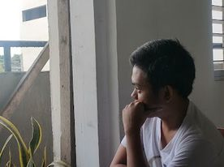

WELCOME TO MY BLOG
Hi, This is Johnpaul and this is my website
I am Johnpaul, a person that firmly believes that fantasy is not just an escape from reality but a gateway to a realm where our imagination reigns supreme. In a world where the mundane things meets the extraordinary, I find solace and peace in the enchanting embrace of fantasy. Ever since i was 14, My love for videogames is insatiable. I've been in this incredible journey and sharing my love for online games. In the symphony of my life, Gaming and Anime composed harmonious melodies, enriching my experiences, connecting me with a global community, and shaping my personal and creative growth. They are not just entertainment; they are part to my existence. And for those who disagree with me “Stories of imagination tend to upset those without one.”
Celestial Garden
The Celestial Garden, more popularly known among locals as Good Shepherd, is a cemetery owned and managed by the Tanchan Foundation, Inc. Located in the hills of Banawa, the cemetery has become a tourist attraction due to its 'Stations of the Cross' which features life-size statues depicting Jesus Christ's last hours.
Celestial Garden has caught the attention of people from all around Cebu because of the 14 life-sized statues depicting the Station of the Cross that dot the 12-hectar meadow. Before, this place only gets crowded during the Lent with pilgrims doing the Via Crucis, a Roman Catholic practice where people commemorate Jesus' passion and death on the cross. But I've noticed in the recent years that more and more people, young and old, visit here to do other things.
It was already past 6 AM when we got here. There were already joggers in the area, families and couples on picnics while watching the sunrise, students snapping photos of surrounding, and others who may have just finished visiting the grave of their loved ones. Being a first-timer, I took the chance getting a close up view of the garden and snapped a couple of photos then settled down for a while to eat.
Simala Shrine
The weekend (Sunday) has arrived, the day my family decided to visit Simala again in the year 2023. Since we live on Cordova, Me and my family decided to wake up early and pack things up for the ride so we can catch up to the Morning rush of V-hire.
As you may know that,
Simala Shrine, also known as The Monastery of the Holy Eucharist, is situated in Barangay Lindogon, Sibonga, Cebu, and is celebrated as one of the most revered religious sites in the Philippines. The monastery is both constructed and overseen by the Marian Monks of Eucharistic Adoration (MMEA), who serve as its custodians. Its popularity soared around 1997, attracting throngs of people who sought to offer prayers and wishes to the Blessed Virgin Mary.
Comments